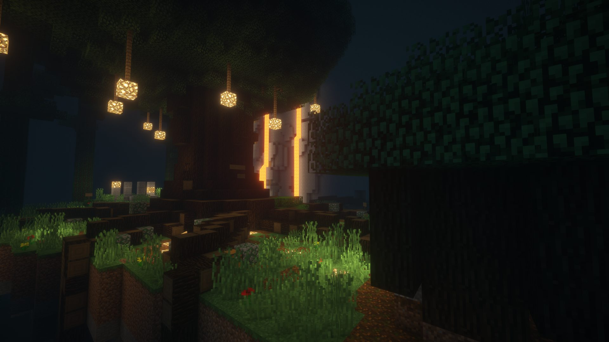

GALLERY

1 / 5
STORY
색이 사라진 세상을
원래대로 돌리기 위한 모험을 떠나보세요
어느 날 갑자기 세상의 모든 색채가 사라졌습니다. 회색빛으로 뒤덮인 도시, 빛을 잃은 하늘. 원인을 알 수 없는 이 재앙 앞에서, 당신은 잃어버린 색깔의 조각들을 찾아 세계 곳곳을 탐험해야 합니다.
각 스테이지마다 숨겨진 색깔의 단서를 찾아내고, 독창적인 퍼즐을 풀어나가세요. 현대 판타지 세계관 속에서 펼쳐지는 TEAM 아토의 메인 시리즈 첫 번째 작품입니다.
REQUIREMENTS
마인크래프트
Java Edition 1.12.2
필수
옵티파인
1.12.2 최신 버전
자유
쉐이더
BSL / Complementary 권장
권장
플레이 인원
2~3인 (싱글 플레이 · LAN · 버킷 가능)
자유